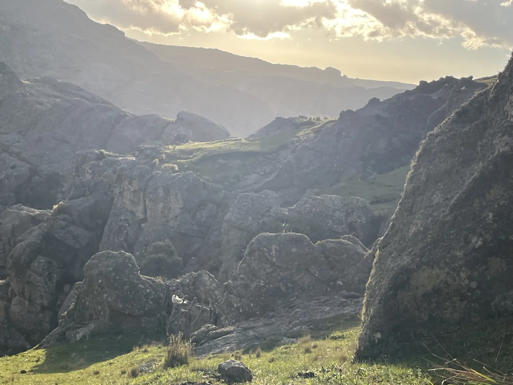

Córdoba
Mogote
El centinela de Los Gigantes

En el corazón de las Sierras Grandes de Córdoba se levanta el Mogote, una de las cumbres emblemáticas del macizo de Los Gigantes.
Una experiencia de trekking de montaña entre enormes formaciones graníticas, quebradas, valles de altura y paisajes serranos que invitan a explorar.
Un recorrido para descubrir la geografía agreste de Los Gigantes, disfrutar de sus panorámicas y alcanzar una cumbre con identidad propia.
- 🥾 Ascenso al Mogote.
- ⛰️ Los Gigantes, Córdoba.
- 🌄 Paisajes de montaña y formaciones graníticas.
- 🌿 Aventura y naturaleza en estado puro.
Un desafío para descubrir la inmensidad de las sierras cordobesas y vivir la montaña paso a paso.
DÍA 1 | CERRO LA CRUZ
Encuentro en el Parador La Rotonda e inicio de la travesía por la Ruta Este. Exploramos las formaciones graníticas, la Cueva de los Pajaritos y la Cueva de la Salamanca. Ascenso a la cumbre del Cerro La Cruz y regreso al refugio.
DÍA 2 | CERRO MOGOTE GRANDE
Jornada de trekking por la Ruta Norte hacia el Mogote Grande (2.400 msnm), máxima cumbre de la travesía. Visitamos el Mirador de los Refugios y el área de restauración del bosque nativo. Descenso por la ladera Este, pasando por la formación rocosa conocida como El Gorila.
DÍA 3 | MEDITACIÓN Y RETORNO
Jornada de relax, mañana libre, meditación y regreso al punto de encuentro.
DATOS DE LA TRAVESÍA
Duración: 3 días / 2 noches.
Distancia: aproximadamente 25 km.
Altura máxima: 2.400 msnm.
Dificultad: moderada.
Alojamiento: refugio de montaña.